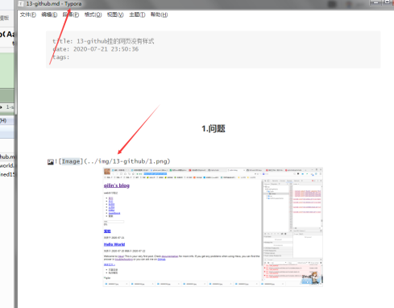
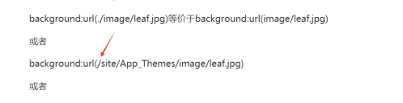

1. 博客图片不显示

1.1 绝对路径的 “/”号会被 变成%，无法识别；
1.2 相对路径，不知道为什么没有用；
但比较迷惑性的是，在Typora里面是看的到的；2020-7-22 23:09:37

1.2. 最终
1.无意中发现了这个：

虽然在typora里面看不到；
但是hexo s能看到；
组队说了：不能同时的，解析规则不一样；2020-9-5 02:37:00

2.之后hexo g -d 试试；
- 有效；2020-7-23 00:24:50
1.3. 还是用网络
空间问题，还是把图片弄到网络上；
目前用的有道云笔记 ；2020-8-3 02:25:21
1.4 让typore可以预览
1.在上面1.2里，说了不能预览
2.因为，permalink没配置好
hexo的_config.yml
# URL ## If your site is put in a subdirectory, set url as 'http://yoursite.com/child' and root as '/child/' url: https://qilinclolik.gitee.io #http://yoursite.com root: / # 永久链接格式：分类/文件名 permalink: :title/ #:category/:title/ ; :lang/:title/ permalink_defaults: pretty_urls: trailing_index: true # Set to false to remove trailing 'index.html' from permalinks trailing_html: true # Set to false to remove trailing '.html' from permalinks <!--hexoPostRenderEscape:<figure class="highlight yaml"><table><tr><td class="gutter"><pre><span class="line">1</span><br><span class="line">2</span><br><span class="line">3</span><br><span class="line">4</span><br><span class="line">5</span><br><span class="line">6</span><br><span class="line">7</span><br><span class="line">8</span><br><span class="line">9</span><br><span class="line">10</span><br><span class="line">11</span><br><span class="line">12</span><br><span class="line">13</span><br><span class="line">14</span><br><span class="line">15</span><br><span class="line">16</span><br><span class="line">17</span><br><span class="line">18</span><br><span class="line">19</span><br><span class="line">20</span><br><span class="line">21</span><br><span class="line">22</span><br><span class="line">23</span><br><span class="line">24</span><br><span class="line">25</span><br><span class="line">26</span><br><span class="line">27</span><br><span class="line">28</span><br><span class="line">29</span><br><span class="line">30</span><br><span class="line">31</span><br><span class="line">32</span><br><span class="line">33</span><br><span class="line">34</span><br><span class="line">35</span><br><span class="line">36</span><br><span class="line">37</span><br><span class="line">38</span><br><span class="line">39</span><br><span class="line">40</span><br><span class="line">41</span><br><span class="line">42</span><br><span class="line">43</span><br><span class="line">44</span><br><span class="line">45</span><br><span class="line">46</span><br><span class="line">47</span><br><span class="line">48</span><br><span class="line">49</span><br><span class="line">50</span><br><span class="line">51</span><br><span class="line">52</span><br><span class="line">53</span><br></pre></td><td class="code"><pre><span class="line"></span><br><span class="line"><span class="string">+</span> <span class="string">之前permalink那里是</span> <span class="string">:category/:title/</span></span><br><span class="line"></span><br><span class="line"><span class="string">+</span> <span class="string">让每次url都多了一个category（分类名)</span></span><br><span class="line"></span><br><span class="line"><span class="number">3</span><span class="string">.改成`permalink:</span> <span class="string">:title/`就好了</span></span><br><span class="line"></span><br><span class="line"><span class="string">+</span> <span class="string">为什么呢？</span></span><br><span class="line"><span class="string">+</span> <span class="string">你看相对路径：例如：</span></span><br><span class="line"> <span class="string">+</span> </span><br><span class="line"></span><br><span class="line"><span class="comment">### 2. 密匙已经被使用；</span></span><br><span class="line"></span><br><span class="line"><span class="number">1</span><span class="string">.</span> <span class="string">也许在github，一个账户正在使用了一个ssh密匙后，那个ssh就会被记录。</span></span><br><span class="line"></span><br><span class="line"> <span class="string">而gitee那边不冲突；</span></span><br><span class="line"></span><br><span class="line"> <span class="string">一个ssh密匙，分别可以在github与gitee都使用；</span></span><br><span class="line"></span><br><span class="line"> <span class="string"><!--more--></span></span><br><span class="line"></span><br><span class="line"> <span class="string">但一个密匙应该不能在两个github号上用；</span></span><br><span class="line"></span><br><span class="line"><span class="number">2</span><span class="string">.</span> <span class="string">只有这样假设了。去追求是否正确就不用了。</span></span><br><span class="line"></span><br><span class="line"><span class="number">3</span><span class="string">.</span> <span class="string">第二个github号：qilin-meiyao-luka，用的是3293-ssh密匙</span></span><br><span class="line"></span><br><span class="line"> <span class="string">唯一的gitee号也是这个密匙；</span></span><br><span class="line"></span><br><span class="line"> <span class="string">大号github，用的7920ssh密匙；</span></span><br><span class="line"></span><br><span class="line"> <span class="number">2020-8</span><span class="number">-7</span> <span class="number">18</span><span class="string">:35:45</span></span><br><span class="line"></span><br><span class="line"> <span class="string">---</span></span><br><span class="line"></span><br><span class="line"><span class="comment">### 3. 报错--not found：git；</span></span><br><span class="line"></span><br><span class="line"><span class="type"></span></span><br><span class="line"></span><br><span class="line"><span class="string">那手动创建一个试试；</span></span><br><span class="line"></span><br><span class="line"><span class="string">`npm</span> <span class="string">install</span> <span class="string">hexo-deployer-git</span> <span class="string">--save`</span></span><br><span class="line"></span><br><span class="line"><span class="string">不对，这是个插件，单纯的没安装这个插件。没有这个，应该就不能生成本地静态文件吧；</span></span><br><span class="line"></span><br><span class="line"><span class="meta">---</span></span><br><span class="line"></span><br><span class="line"></span><br><span class="line"></span><br><span class="line"><span class="comment">### 4. hexo d 报错 --第二个github账号--ssh冲突；</span></span><br><span class="line"></span><br><span class="line"><span class="string">报错内容：</span></span><br><span class="line"></span><br></pre></td></tr></table></figure>:hexoPostRenderEscape--> ERROR: Permission to qilin-meiyao-luka/qilin-meiyao-luka.git denied to Cqilin. fatal: Could not read from remote repository.
Please make sure you have the correct access rights
and the repository exists.
FATAL {
err: Error: Spawn failed
at ChildProcess.
les\hexo-deployer-git\node_modules\hexo-util\lib\spawn.js:51:21)
at ChildProcess.emit (events.js:210:5)
at ChildProcess.cp.emit (G:\1-sanciyuan\11-qilin_meiyao_luka\node_modules
cross-spawn\lib\enoent.js:34:29)
at Process.ChildProcess._handle.onexit (internal/child_process.js:272:12)
{
code: 128
}
} Something’s wrong. Maybe you can find the solution here: %s https://hexo.io/do
cs/troubleshooting.html
1 |
|
gitee
Host gitee.com
HostName gitee.com
PreferredAuthentications publickey
IdentityFile ~/.ssh/id_rsa
github
Host github.com
HostName github.com
PreferredAuthentications publickey
IdentityFile C:/Users/Administrator/.ssh/id_rsa_gitee
1
2
3
根据网上资料所说：
git@github.com:name/project.git (这是原来直接复制过来的的url)
这时候要改一下:
git@github_1.com:name/project.git
这个github_1就是之前在config配置文件里修改的host
1
2
3
4
5
6
7
+ 因为我配置了config，所以第二个github账号也用到了第一个github账号的ssh，从而第二个号没有权限；
+ 假如我这么设置试试：
# gitee
Host gitee.com
HostName gitee.com
PreferredAuthentications publickey
IdentityFile ~/.ssh/id_rsa
# github
Host github.com
HostName github.com
PreferredAuthentications publickey
IdentityFile C:/Users/Administrator/.ssh/id_rsa_gitee
# github
Host github_1.com
HostName github.com
PreferredAuthentications publickey
IdentityFile C:/Users/Administrator/.ssh/id_rsa
<!--hexoPostRenderEscape:<figure class="highlight clean"><table><tr><td class="gutter"><pre><span class="line">1</span><br><span class="line">2</span><br><span class="line">3</span><br><span class="line">4</span><br><span class="line">5</span><br><span class="line">6</span><br><span class="line">7</span><br><span class="line">8</span><br><span class="line">9</span><br></pre></td><td class="code"><pre><span class="line"></span><br><span class="line"> 虽然第一个gitee与最下面的github用的同一个ssh。</span><br><span class="line"></span><br><span class="line"> 但万一不冲突呢？先实验试试；</span><br><span class="line"> </span><br><span class="line"> > 如果不行，就创建第三个ssh；</span><br><span class="line"></span><br><span class="line">#### <span class="number">3.2</span> 在git bash里面验证试试：</span><br><span class="line"></span><br></pre></td></tr></table></figure>:hexoPostRenderEscape--> Administrator@SKY-20160609AOR MINGW64 ~
$ ssh -T git@gitee.com
Hi Cqilin! You’ve successfully authenticated, but GITEE.COM does not provide shell access.
Administrator@SKY-20160609AOR MINGW64 ~
$ ssh -T git@github.com
Hi Cqilin! You’ve successfully authenticated, but GitHub does not provide shell access.
Administrator@SKY-20160609AOR MINGW64 ~
$ ssh -T git@github_1.com
Hi qilin-meiyao-luka! You’ve successfully authenticated, but GitHub does not provide shell access.
Administrator@SKY-20160609AOR MINGW64 ~
$
1 |
|
Administrator@SKY-20160609AOR MINGW64 ~
$ ssh -T git@github_1.com
Hi qilin-meiyao-luka! You’ve successfully authenticated, but GitHub does not provide shell access.
1
2
3
4
5
成功获取到第二个github账号：qilin-meiyao-luka;
3.3 注意远程仓库的url也要改：
deploy:
type: git
#repo: https://gitee.com/qilinclolik/qilinclolik.git
repo:
github: https://github_1.com/qilin-meiyao-luka/qilin-meiyao-luka.git
# example, https://github.com/hexojs/hexojs.github.io
branch: master
1
2
3
4
5
6
7
8
9
10
11
12
13
14
15
16
17
18
19
20
21
22
23
24
25
26
27
28
29
30
31
32
33
34
35
36
37
38
39
40
41
42
43
44
45
46
47
48
49
50
51
52
53
54
55
56
57
58
也要改成github_1 ;
改了就报错；
试试不改能不能行；（改是文章里面说的，但既然报错，只有不改试试）
3.3.1 发现问题，没有用仓库的ssh链接，用的html链接；但也不应该报错；
+ 改成ssh链接，并遵循文章的修改为github_1，先这么试试；
`git@github_1.com:qilin-meiyao-luka/qilin-meiyao-luka.git`
上传失败；
改用 git bash；
上传成功；
但是没有css；
.....
#### 3.4 解决没有css
1. 老问题，仓库名字：
qilin-meiyao-luka.github.io
它默认的是：qilin-meiyao-luka
必须把.github.io填上；
还有右边的确认；

over；2020-8-7 20:19:16
---
### 5. next主题侧边栏没有统计；
8.0版本；问题：

解决：https://theme-next.js.org/docs/getting-started/
最下面：4.5. Configuring Menu Items
y default NexT shows the icons of menu items without badges.
- [`icons`](https://theme-next.js.org/docs/getting-started/#menu_settings-1)
- [`badges`](https://theme-next.js.org/docs/getting-started/#menu_settings-2)
Set the value `badges` to `true` to display the count of Posts / Categories / Tags within menu items in `menu_settings` section in theme config file as following:
next/_config.yml
menu_settings:
badges: true
2020-8-10 14:53:55
---
### 6. 阅读统计与评论被刷新；
1. 我估计是因为我在另一个博客上面用了同一个leancloud账号的id和key；
未时间，但根据那个时候的事情；
再上我重复的点击，刷新页面，修改文字title，都没有刷新阅读统计和评论；
想的就应该是这个了；
2. 2020-8-11 05:30:05
---
### 7. 报错hexo-them-next

直接在node_modules目录下把这个文件夹删了；
---
### 8. url乱码-过去式
1.